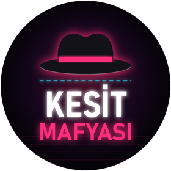

KESİT MAFYASI
GTA 6 highlight videos · TikTok @kesitmafyasi
Kesit Mafyasi is a TikTok channel that shares short, vertical GTA 6 highlight videos featuring Turkish streamers. Every video credits the streamer on screen.
The "Kesit Mafyasi" app is a private desktop tool used only by the channel owner. It prepares our own edited videos and uploads them to the @kesitmafyasi TikTok account through the TikTok Content Posting API. It is not offered to other users.
If you are a streamer and want a video removed, send a message to @kesitmafyasi on TikTok and we will take it down.